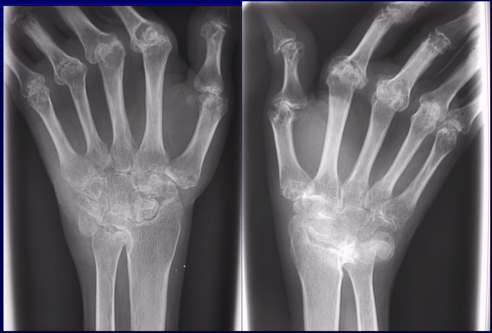

Imaging in Rheumatology.
What is Rheumatology?
- Rheumatology is the subspecialty of medicine devoted to the diagnosis and treatment of diseases that affect bones muscles, ligaments, tendons, joints, and other body parts including the immune system.
Outline
-
Inflammatory arthritis
- Rheumatoid arthritis
- Psoriatic arthritis
- Reiter's disease
-
Juvenile chronic arthritis DDx:
- Osteoarthritis
- Septic arthritis
- Other inflammatory arthritides
- Hemophilia
- Callanan vaccilar dicance
Sutton's Law
This law has been ascribed to Willie Sutton, a famous bank robber. When asked why he robbed banks, he reportedly said, "Because that's where the money is."
In the radiographic evaluation of appendicular arthropathies, the "money" is generally in a relatively small handful of disorders.
Even though over 90 different rheumatic diseases are recognized by the American College of Rheumatology, only three entities are commonly seen in most clinical radiology practices, even including those located in
More Laws....
- In George Orwell's Animal Farm, it is stated that "All animals are equal.
- But some animals are more equal than others.
- " This principle is manifested in the appendicular arthropathies, where some radiographic findings are quite specific and can quickly lead one to the correct diagnosis.
- Other findings are less specific and are usually unhelpful in ordering one's differential diagnosis.
And the Last...
- The Law of Parsimony
- In medical school, one is taught to take historical points and physical findings and to put them together into one diagnosis which explains everything (the law of parsimony).
- However, once one reaches the ward rotations and opens a patient's chart to the problem list, one sees that most real patients have several disorders going on simultaneously.
- In real life, patients often have more than one arthropathy.
- This is most commonly seen in patients with
Approach
-
ABCDE'S
- Alignment
- Bone
- Cartilage/Joint space
- Distribution
- Erosions.
- Soft tissue
Rheumatoid Arthritis.
- Rheumatoid arthritis (RA) is a chronic systemic disease of unknown origin that predominantly involves synovial tissue.
- Early diagnosis and initiation of proper therapy help modify the course of the disease and reduce the degree of severe late sequel.
- Radiology plays a key role in diagnosis and management of RA.
Tools of the Trade.
- Currently, magnetic resonance imaging is the best imaging modality because it depicts soft-tissue changes and damage to cartilage and bone even better and at an earlier stage than does computed tomography.
- Ultrasound and conventional radiography are more readily available but cannot show the entire spectrum of the disease.
ABCDE'S
Alignment
- Malalignment: subluxation and dislocations occur late in RA.
- Boutonniere and Swan-neck deformities
Normal Joint
Swan Neck Deformity
ABCDE'S - Bones
- Osteoporosis due to hyperemia
ABCDE'S - Cartilage/Joint Space
- Uniform joint space
Erosions.
Soft Tissue
- Periarticular soft tissue swelling (earliest
Odontoid Erosion
Elbow Involvement.
Psoriatic Arthritis
- Different from RA -Bone proliferation -Often asymmetric although usually bilateral -Normal bone
Psoriatic Arthritis Patterns
- Monoarthritis/asymmetric oligoarthritis (most common): sausage digit
- Sacroilitis/spondylitis
- Symmetric polyarthritis (resembling RA)
- Polyarthritis w/ DIP involvement
- Arthritic mutilans
Foot Pencil in Cup
Reiter's Disease
- Radiographically indistinguishable from psoriatic arthritis
-
Distribution different from psoriatic arthritis
- Primarily involving feet, ankles, knees
- Hands, hips, SI joints and spine much less frequently involved
Reiter's Disease Clinical Triad
- Arthritis
- Conjunctivitis
- Urethritis/ cervicitis
Juvenile Chronic Arthritis
- Including a variety of disorders in children -Still's disease 70% (seronegative chronic arthritis)
- ankylosing spondylitis
- psoriatic arthritis of inflammatory bowel disease
- juvenile onset adult type RA
Osteoarthritis
- Non-uniform joint space loss
- Osteophytes
- Subchondral cysts and sclerosis
- Normal mineralization
- No erosions
-
Locations
- Common in hands DIP/PIP, $1^{st}$ CMC, feet, knees (esp. medial compartment), and hips
- Shoulders/elbows generally spared
- Wrists/ankles uncommonly involved
Early
Late
Septic Arthritis
- Monoarticular
-
Early sign
- Joint effusion
- Periarticular soft tissue swelling
-
Later
- Uniform joint space loss
- Joint-centered osseous destruction
- Juxtaarticular osteopenia
-
Arthritis
- Periarticular softtissue swelling
- Osteopenia
- No bone formation
- Marginal and peripheral erosions
- Cartilage destruction a late finding
-
Location:
- hips, knees, tarsal joints, and spine
Tuberculous Arthritis
-
Phemister's triad:
- Periarticular osteopenia
- Peripheral/marginal osseous erosions
- Gradual joint space narrowing
- Tuberculous Arthritis
Hemophilia
- Chronic repetitive hemarthrosis
- Chronic repetitive intraosseous bleeding
Hemophilia
Scleroderma
- 50% of patients with articular symptoms
- Fingertip soft-tissue resorption
- Erosions of distal tuft
- Subcutaneous calcification
- Acroosteolysis and acrosclerosis (less frequently)
Scleroderma
Lupus
- Like RA but without erosions
- No erosions
- Bilaterally symmetric
- Juxtaarticular osteopenia or normal mineralization
- Periarticular soft-tissue swelling
- Reducible subluxations and dislocations
- Normal joint spaces